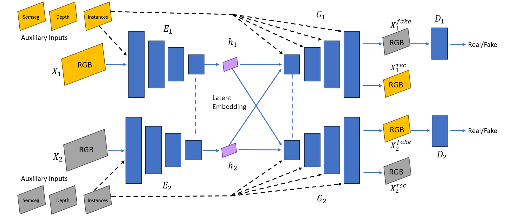

Hybrid Pipeline Overview
Three-Stage Generation Process
Our hybrid pipeline combines three key components to create realistic adverse-condition training data:
- Simulation (S): Uses CARLA to generate perfectly paired sequences in clear vs. adverse conditions
- Diffusion (D): Applies Stable Diffusion/ALDM guided by segmentation labels to enhance realism
- GAN-Based Adaptation (G): Trains an enhanced DA-UNIT model on synthetic and real images
Enhanced DA-UNIT Architecture
Key Architectural Improvements
- Support for depth, semantic, and instance data at encoder/decoder stages
- Improved object shape preservation through auxiliary inputs
- Enhanced label alignment with ground-truth data
- Novel training strategy combining simulated and real images
Technical Details
Blending Technique
Our novel blending approach addresses key challenges in the generation process:
- Adaptive merging of diffusion output with original simulated images
- Mitigation of artifacts (e.g., distorted vehicles)
- Preservation of photorealistic enhancements (e.g., wet roads, nighttime lighting)
Training Strategy
The enhanced training process combines multiple data sources:
- Simulation images for perfect pixel-level matching
- Unlabeled real images to close the simulation-to-real gap
- Auxiliary inputs (depth, semantic segmentation) for improved guidance
Performance Results
Comprehensive evaluation on the ACDC benchmark shows significant improvements:
- +12.1% relative improvement in object detection
- Up to +4.6% improvement in nighttime semantic segmentation
- Notable gains in rain and foggy conditions
Applications
Practical Benefits
- Cost-effective generation of adverse-condition training data
- Significant reduction in real-world data collection needs
- Improved robustness of autonomous perception systems
- Flexible adaptation to various adverse conditions (night, rain, fog, snow)